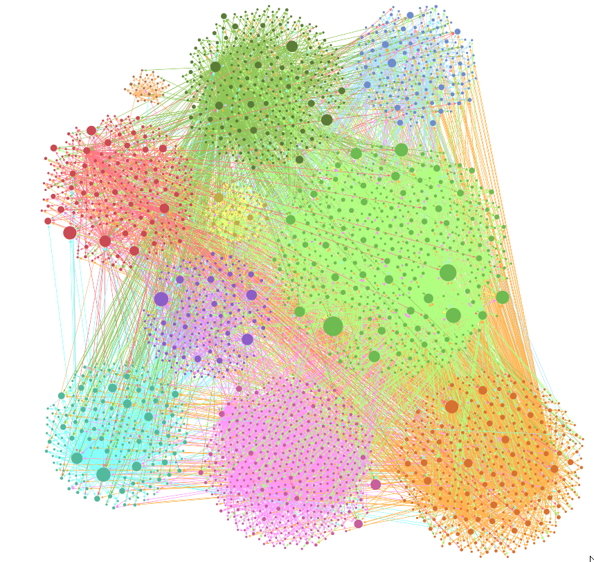
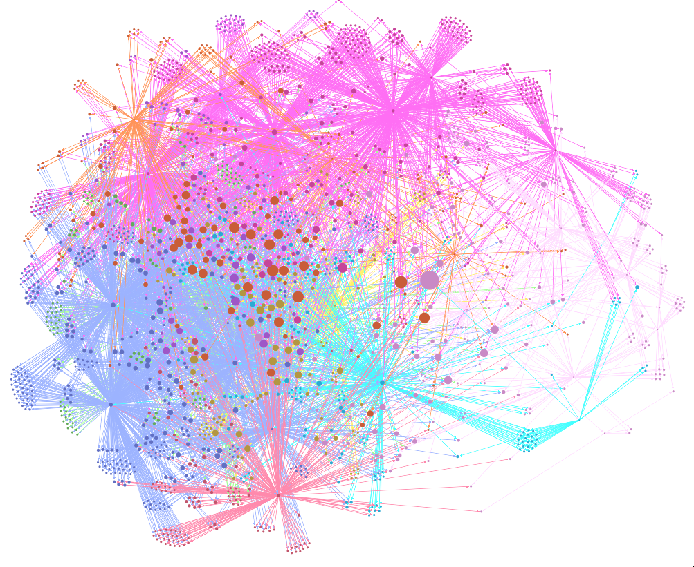
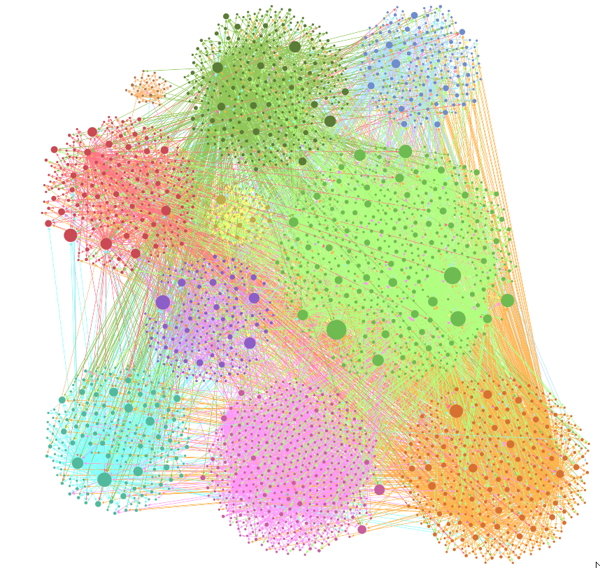
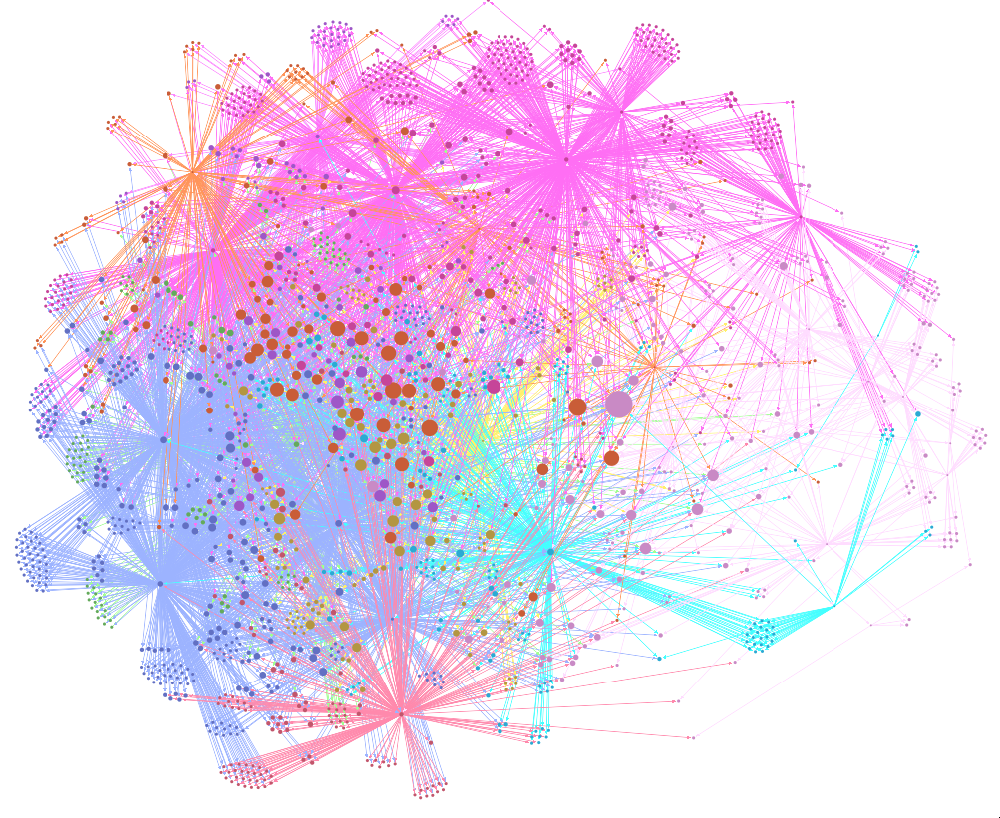

Samsthings.org
Home
⟶
Skills
⟶
Portfolio
⟶
Contact
Here I list a series of noteworthy projects that I have completed in the past:
- For my undergraduate dissertation, I developed the "Sociogram Analysis Toolkit";
A web app built on Laravel + Livewire that is able to display quick and easy visualisations
of scraped Instagram user data. Aimed at tracking the behaviour and connections of online radicalisers,
it utilises a variety of different SNA methods.
 

The source code for this project is currently closed. Please contact me if you wish to see a demo.